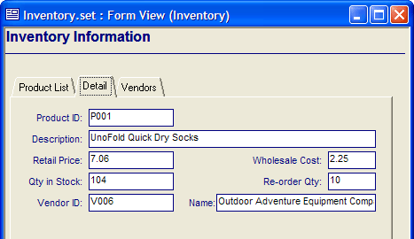
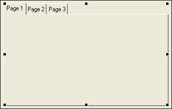
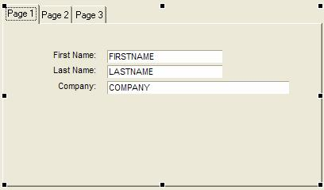
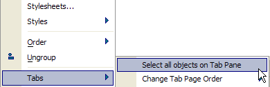
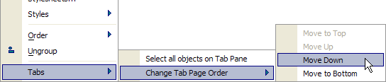
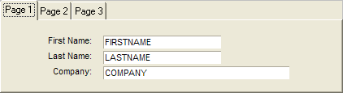
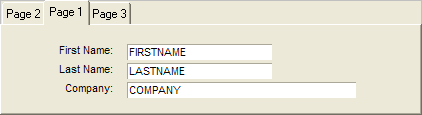
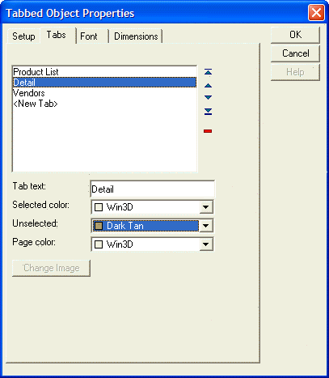

Creating a Tabbed Control
Tabbed controls provide a familiar, tabbed interface that you can use on a form to organize fields, controls, and other objects. For example, you have a form in which you enter invoice information. By creating a tabbed control, you can have one tabbed page on which you fill in customer information, one page on which you enter billing information, and a third page on which you enter individual line-items.

Tabbed Subform
To create a tabbed control, you use the Tabbed Control tool on the Toolbox. Once the object has been created, you can set the names that appear on the tab labels as well as other properties. Lastly, you can drag fields, text, and other objects onto each tabbed page.
Open a form to edit in the Form Editor.
If necessary, select View >Toolbox to make the Toolbox appear.
On the Toolbox, click the Tabbed Control tool.
Click and drag over the area on the form where you want to place the tabbed control. When you release the mouse button, the tabbed control appears. The initial control defaults to three pages, although you can add or delete pages.

Tabbed Subform Object
Setting the Properties of a Tabbed Control
In the Form Editor, right-click on the tabbed control and select Properties.
On each tabbed page of the Properties dialog box, adjust the settings as Necessary. Refer to the table below for more information.
When you have finished setting the properties, click OK.
Placing Objects on a Tabbed Control
Once you have created a tabbed control and set its properties, you are ready to start adding objects.
Click the tab of the page you want to add objects. The selected tab page appears.
Add new objects to the tabbed page the same way you would for a form. For example, to add a new field, click and drag a field from the Drag-and-Drop List and place it on the tabbed page.
Make sure that the Always on top attribute of each object is turned off. You can clear this setting by right clicking on the object and selecting Properties ... and displaying the Setup tab.
When you have finished adding objects to a particular page, click another tab and add objects to the selected page.

Adding objects to a tab page
Placing Objects on All Tabbed Pages
Right-click the object you want to appear on all tabbed pages and select Properties....
Click the Setup tab.
Click the Always on top check box.
Click OK. The object now appears on every tabbed page.
Right-click the tabbed control and select Properties....
Click the Tabs tab.
Move the cursor to the first blank line in the Tab table. Fill in the name of the new page, and then press ENTER.
Move the cursor to the next blank line.
Click OK. The tab is created.
Right-click on the tabbed control and select Properties....
Click the Tabs tab.
Select the tab you want to remove from the tab list.
Press
 to remove the tab.
to remove the tab.Click OK, the tabbed page is removed.
Changing the Order of Tabbed Pages
Select all of the objects on the tabbed page that you want to move.
Select Arrange > Group. The objects are grouped together.
Move the grouped object off of the tabbed page.
Select all of the objects from the second tabbed page.
Select Arrange > Group. The second group of objects are grouped together.
Move the second grouped object to the first tabbed page.
Move the first grouped object to the second tabbed page. The order of the pages is changed.
Selecting all Objects on a Tab Page
You can now select all of the elements placed on the page of a tab control with a single action. After right clicking on the control, you will see the following menu selection.

New menu selections also will move the location of tab pages (and all their contents) upwards or downwards.

The following images show a tab control before and after changing a page's location.


The Tabbed Object Properties dialog allows you to reorganize page locations or delete pages by using the controls at the right side of the list box. In addition, the dialog allows you to specify the Selected color, Unselected color, and Page color of each tab page.

Navigation from Field to Field on Forms that have Tabbed Objects
When Alpha Anywhere reaches the last field on a tab page, it will activate the next page of the tabbed control. Alpha Anywhere will cycle through all of the objects on each tab page before advancing to the next record.
See Also
Using the Toolbox, Placing a Field on a Form, Tabbed Control Properties